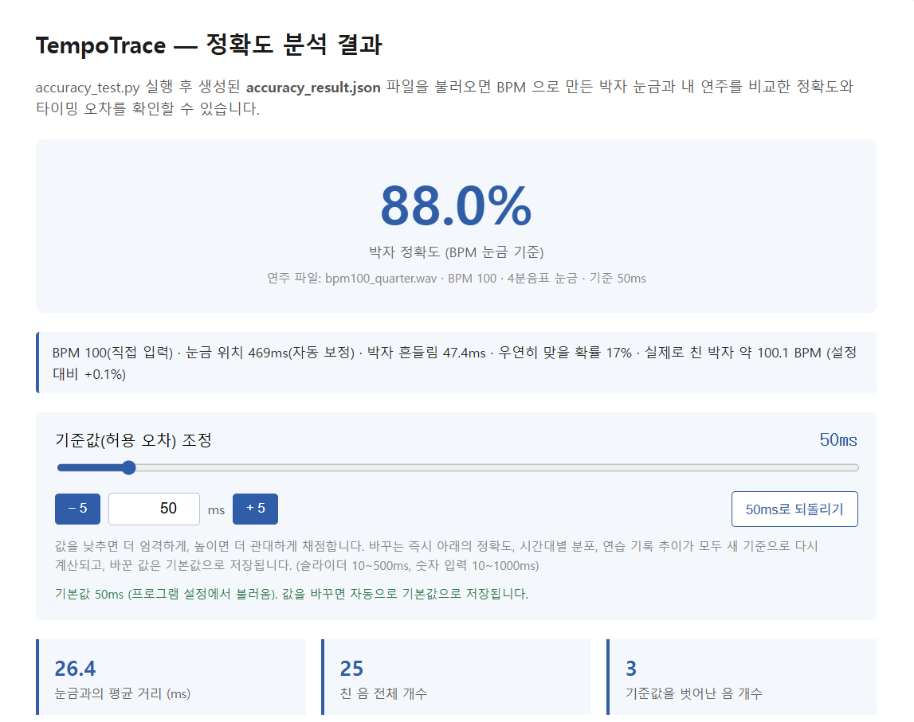
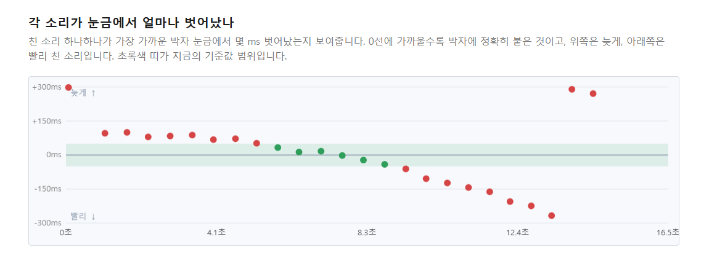

- 피드백: 음정 분석을 다시 추진해 틀린 소리까지 보정하고, 웹사이트로 만들면 좋겠다는 의견
- 판단: 기타는 코드·하모닉스·벤딩처럼 음정이 애매한 연주가 많아 음정은 안정적으로 판정하기 어렵다고 보고, 박자 중심을 유지 대신 박자 쪽에서 쓸모를 넓히는 방향으로 기능을 추가
- 결정: 기존 곡 모드는 그대로 두고, 옵션 하나(
--bpm)로 BPM 모드를 추가 옵션을 쓰지 않으면 이전과 완전히 같은 결과가 나오는 것을 확인
--bpm)로 BPM 모드를 추가
옵션을 쓰지 않으면 이전과 완전히 같은 결과가 나오는 것을 확인| 곡 모드 (원곡과 비교) | BPM 모드 (박자 눈금과 비교) | |
|---|---|---|
| 필요한 것 | 원곡 파일 + 내 연주 | 곡의 BPM + 내 연주 |
| 약점 / 장점 | 원곡에 드럼·보컬이 섞이면, 기타가 아닌 소리까지 기준이 됨 | 박자만 쓰므로 다른 악기가 섞여도 영향이 적음 |
| 연습 방식 | 원곡 파일을 준비해야 함 | 곡을 틀어 놓고 치는 평소 습관 그대로 (BPM은 검색하거나 자동 측정) |
| 점수의 뜻 | 원곡의 음을 얼마나 맞췄나 | 친 소리가 박자 눈금에 얼마나 붙었나 |
--bpm=100 으로 입력 (소수점도 가능)--bpm=auto 또는 --measure-bpm — 원곡의 소리 시작 시각들로 BPM을 추정하고, 2배·절반 후보도 함께 보여줌# BPM을 직접 입력하고, 8분음표 눈금으로 분석 python accuracy_test.py --bpm=100 --div=2 내연주.wav # 원곡에서 BPM을 자동 측정해서 분석 python accuracy_test.py --bpm=auto --original=원곡.mp3 내연주.wav # BPM만 측정해서 보기 python accuracy_test.py --measure-bpm --original=원곡.mp3
| 리듬 모양 | 정확히 맞음 | 후보(2배·절반) 안에 정답 |
|---|---|---|
| 4분음표 | 100% | 100% |
| 8분음표가 섞임 | 82% | 97% |
| 엇박이 섞임 | 75% | 86% |
| 고르게 이어진 8분음표 | 0% | 73% |
bpm_test.py로 재현 가능

| 박자 흔들림(표준편차) | 정확도 평균 | 눈금 집중도 평균 |
|---|---|---|
| 10ms | 100.0% | 0.99 |
| 30ms | 90.7% | 0.95 |
| 50ms | 69.9% | 0.88 |
| 80ms | 48.6% | 0.72 |
| 아무렇게나 침 | 22.2% (상위 5%는 38%) | 0.17 |